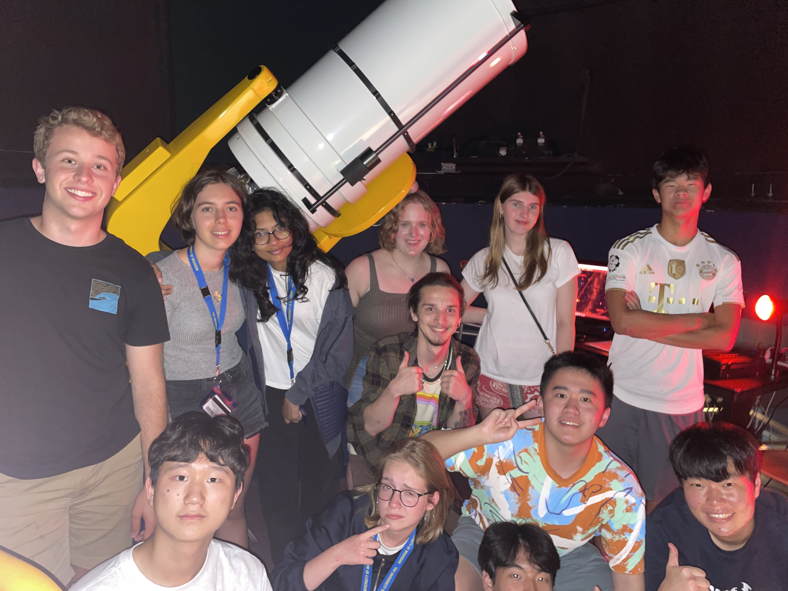

Teaching and Outreach
Michigan Math and Science Scholars (MMSS)
During the summer of 2023, I had the opportunity to help facilitate a two week program through the Michigan Math and Science (MMSS) program. The course, titled “Hunting for the Dark: Black Holes and Dark Matter”, gave high school students from around the world the opportunity to learn the basics of astronomy and astrophysics, with an emphasis on dark matter and black holes. My role was the facilitation of daily programming labs, in which the students learned the basics of programming in the context of astronomy. I also created a final project for the students to do, in which they delved into the M-sigma relationship with TNG-100 data.
Below is an image of the 2023 MMSS class during one of our observing nights!

Astronomy Monthly at WCC
Nunc lacinia ante nunc ac lobortis. Interdum adipiscing gravida odio porttitor sem non mi integer non faucibus ornare mi ut ante amet placerat aliquet. Volutpat eu sed ante lacinia sapien lorem accumsan varius montes viverra nibh in adipiscing blandit tempus accumsan.
Peer Tutor at Washtenaw Community College
Nunc lacinia ante nunc ac lobortis. Interdum adipiscing gravida odio porttitor sem non mi integer non faucibus ornare mi ut ante amet placerat aliquet. Volutpat eu sed ante lacinia sapien lorem accumsan varius montes viverra nibh in adipiscing blandit tempus accumsan.
Telescope Operator at the University of Michigan
Nunc lacinia ante nunc ac lobortis. Interdum adipiscing gravida odio porttitor sem non mi integer non faucibus ornare mi ut ante amet placerat aliquet. Volutpat eu sed ante lacinia sapien lorem accumsan varius montes viverra nibh in adipiscing blandit tempus accumsan.